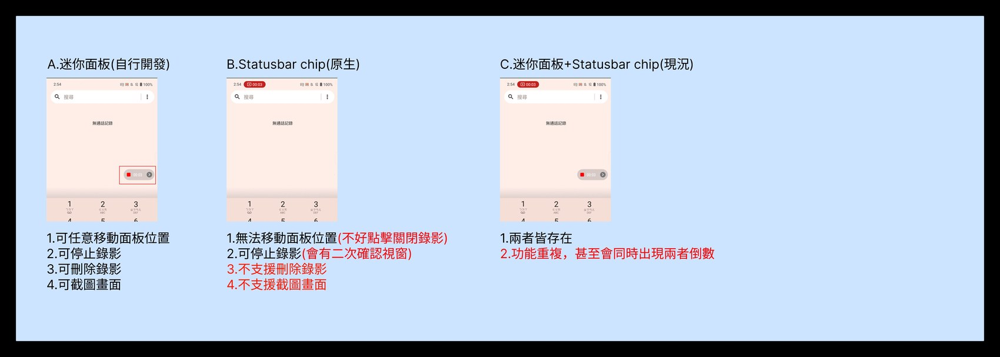

When Android ships a capability, every OEM still has to design the UX above it
Android 給了底層能力，面對使用者的那層體驗還是要 OEM 自己設計
Gesture navigation, Circle to Search, Predictive Back, edge-to-edge — Android ships the underlying capability, but the experience around it is the OEM’s to design: the settings IA, the entry points, the toggle behaviour, and how each feature behaves on real hardware. At ASUS I owned that layer for two product lines with very different users — ROG (gaming, power users who tune everything) and Zenfone (general consumer). Same Android base, two front doors.
手勢導航、Circle to Search、Predictive Back、edge-to-edge——這些能力 Android 都提供了底層，但使用者實際怎麼用，得由 OEM 自己設計：設定怎麼擺、從哪裡進入、開關怎麼運作，以及每個功能在真實機器上的表現。在 ASUS，我負責這一層，而且要同時顧到兩條使用者差很多的產品線——ROG（電競機，玩家什麼都想自己調）和 Zenfone（一般消費者）。底層是同一個 Android，但這兩條線給使用者的入口完全不同。
From-zero feature design — and the system view between features
從零的功能設計——以及功能之間的系統視角
The features are the easy part — the rules between them are the work
功能是容易的部分——功能之間的規則才是真正的工作
The hardest work on a platform team isn’t any single feature — it’s everything between them. Two capabilities can each be correct in isolation and still collide when they share an input, a gesture, or a screen region. And the same feature often can’t behave identically on a gaming phone and a general consumer phone. My job was to hold that system view: define the rules where features conflict, and decide where the two product lines should diverge — and where they shouldn’t.
平台團隊最難的，不是任何單一功能，而是功能跟功能之間的所有事。兩個能力分開看都沒問題，可是一旦它們搶同一個輸入、同一個手勢、或同一塊畫面，就會打架。而同一個功能，在電競手機和一般消費機上，往往也不能做成一模一樣。我的工作，就是站在整個系統的角度去看：在功能會打架的地方訂出規則，並決定兩條產品線哪裡該走同一套、哪裡該分開。
A gesture two features both wanted — and only one could have
一個兩個功能都想要、卻只能給一個的手勢
Under 3-button navigation, a long-press of the center button is the platform-default trigger for the assistant — and it’s the natural trigger for Circle to Search too. On ASUS devices both were mapped to it, so they were mutually exclusive: enabling one silently disabled the other. Before designing a fix, I mapped how the trigger behaves across the ecosystem to see how others avoided the clash.
在三鍵導航下，長按中間那顆鍵是平台預設用來叫出助理的手勢——它也剛好是 Circle to Search 最自然的觸發點。在 ASUS 的裝置上，兩個功能都被綁在這個手勢上，於是變成互斥：開了一個，另一個就默默失效。在動手想解法之前，我先看了整個 Android 生態怎麼處理這個手勢，別家是怎麼避開衝突的。
Fig. 1 — Mapping the long-press-center conflict across the gesture-navigation ecosystem. Samsung and Pixel route the assistant elsewhere, so the clash never arises; ASUS had both features on the same trigger.
圖 1 — 把「長按中間」這個衝突，放到整個手勢導航生態裡對照。Samsung 和 Pixel 把助理擺到別的手勢上，所以根本不會撞；ASUS 則是兩個功能綁在同一個手勢上。
Finding: both Circle to Search and the assistant claimed long-press-center, and the assistant trigger is the platform default — it can’t simply be removed.
So I did →Re-homed the assistant to bottom-swipe + power-key — where Samsung already puts it — freeing long-press-center for Circle to Search. The clash is resolved without fighting the platform default, and neither feature silently cancels the other anymore. I also deliberately preserved one quirky existing behaviour, because removing it would have blocked a real path users relied on to trigger the feature.
研究發現：Circle to Search 與助理都搶長按中間，而助理的觸發是平台預設——無法直接拿掉。
於是我 →把助理改到底部上滑＋電源鍵長按——也就是 Samsung 既有的位置——把長按中間讓給 Circle to Search。在不對抗平台預設的前提下解掉衝突，兩個功能不再互相默默取消。我也刻意保留了一個既有的特殊行為，因為拿掉它會擋掉使用者真正用來觸發這個功能的一條路徑。
When the platform shipped its own version of something I’d already built
當平台推出了我已經做過的東西
I inherited and stabilised Screen Recording. Mid-cycle, Android shipped a native status-bar recording chip — overlapping the in-house mini-panel we already had. Shipping both produced real redundancy: two controls, sometimes two countdowns running at once. Before deciding, I compared what each could actually do.
我接手並把螢幕錄影穩定下來。過程中，Android 推出了原生的狀態列錄影 chip——功能和我們本來就有的自建迷你面板重疊。兩個一起留著就真的重複了：兩個控制項，有時甚至同時在跑兩個倒數。在做決定之前，我先比較了這兩個各自實際能做到什麼。
Fig. 2 — Comparing the in-house panel, the native chip, and the redundant current state. Capability, not platform-default, drove the call.
圖 2 — 比較自建面板、原生 chip 與重複並存的現況。決定的依據是能力，而非平台預設。
Finding: the native chip couldn’t move, delete a recording, or screenshot; the in-house panel could — but the native chip carried platform consistency.
So I did →Consolidated to the capable in-house panel and suppressed the redundant native countdown, so users get one control that does the whole job instead of two that half-overlap.
研究發現：原生 chip 不能移動位置、不能刪除錄影、也不能截圖；自建面板都做得到——但原生 chip 的好處是跟整個平台一致。
於是我 →收斂到功能完整的自建面板，並關掉重複的原生倒數，讓使用者得到一個能完成整件事的控制項，而不是兩個半重疊的。

The trade-off, side by side — the in-house panel (A) can move, delete and screenshot; the native chip (B) can’t but carries platform consistency; shipping both (C) produced duplicate countdowns. That comparison drove the call to consolidate.
把取捨並排攤開——自建面板（A）可移動、刪除、截圖；原生 chip（B）做不到，但有平台一致性；兩者並存（C）會出現重複倒數。正是這張比較，推動了「收斂成一個」的決定。
What I traded off — and why
我取捨了什麼——以及為什麼
-
01
Resolve conflicts with a rule, not a silent default
用規則解衝突，而不是默默的預設
Trade-off: platform default vs. user intent. For mutually exclusive features I defined an explicit rule and a recovery path, instead of letting the last-toggled feature silently win and the other quietly break.
取捨：照平台預設走，還是順著使用者真正想做的。對於互斥的功能，我訂出明確的規則和一條救回來的路，而不是讓最後被切的那個默默勝出、另一個就悄悄壞掉。
-
02
Diverge the two product lines only where it earns its keep
只在值得的地方讓兩條產品線分流
Trade-off: per-line optimisation vs. one maintainable system. ROG (tunable, gaming) and Zenfone (general) share the same IA everywhere they can; I let them diverge only where the user genuinely differs.
取捨：替每條線各別做到最好，還是維持一套好維護的系統。ROG（電競、可調校）和 Zenfone（一般）能共用的地方就共用同一套資訊架構；只有在使用者真的不一樣的地方，才讓它們分開。
-
03
Capability over platform-default
能力優先於平台預設
Trade-off: native consistency vs. feature completeness. For Screen Recording I kept the control that could actually do the job over the native chip that merely matched convention — then removed the redundancy.
取捨：要跟平台一致，還是要功能完整。螢幕錄影這件事上，我選了真正能把事情做完的那個控制項，而不是只是「比較符合慣例」的原生 chip——然後把多出來的重複拿掉。
Shipped across two lines, with the system made coherent
在兩條產品線上交付，並讓系統變得一致
The from-zero features shipped across ROG and Zenfone on one shared, maintainable system. The clashes that used to resolve themselves silently — Circle to Search vs. the assistant, the duplicate Screen Recording controls — now resolve by an explicit rule, and future platform features inherit that ruleset instead of re-litigating each conflict.
從零的功能在 ROG 與 Zenfone 上交付，共用同一套可維護的系統。過去那些會自己默默分出勝負、讓另一個悄悄失效的衝突——Circle to Search 跟助理搶同一個手勢、螢幕錄影控制項重複——如今都依明確規則解決；未來的平台功能可以直接沿用這套規則，不必每次重打一輪。
The same system lens held under live pressure. When a gyroscope feature drew a cluster of field complaints in the China region after launch, I treated it as a research signal rather than a one-off bug — studied the player behaviour behind the reports, adjusted the design accordingly, and closed the issue fast.
同一套系統視角，在真實壓力下一樣成立。陀螺儀功能上市後在中國區引發一波客訴時，我把它當成研究訊號、而不是單一 bug——研究客訴背後玩家真正的使用行為，據此調整設計，並快速收掉問題。
Fig. 3 — A post-launch field crisis, handled as research. Seven China-region complaints about the gyroscope feature became a player-behaviour study that drove a design adjustment — resolving all seven and recovering four returns within a month.
圖 3 — 把上市後的現場危機，當研究來處理。陀螺儀功能在中國區的 7 件客訴，化成一份玩家行為研究、據以調整設計——一個月內解決全部 7 件、並挽回 4 件退貨。
On a platform team, the leverage is in seeing the system
在平台團隊，真正有價值的是看懂整個系統
The leverage isn’t in polishing one feature — it’s in seeing the system: which features fight, where two products should look the same, and where the platform’s default is worth overriding. The features are the easy part; the rules between them are the work. That same instinct — diagnose the structure first, then design — is what carried over from my industrial-tools years into platform UX.
真正有價值的，不是把某一個功能磨得多亮，而是看懂整個系統：哪些功能會打架、兩個產品哪裡該長得一樣、哪些平台預設值得被推翻。功能是容易的部分；功能跟功能之間的規則，才是真正的工作。這種直覺——先把結構看清楚，再開始設計——正是我從做工業工具那幾年，一路帶到平台 UX 的東西。